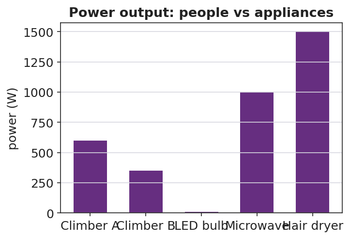
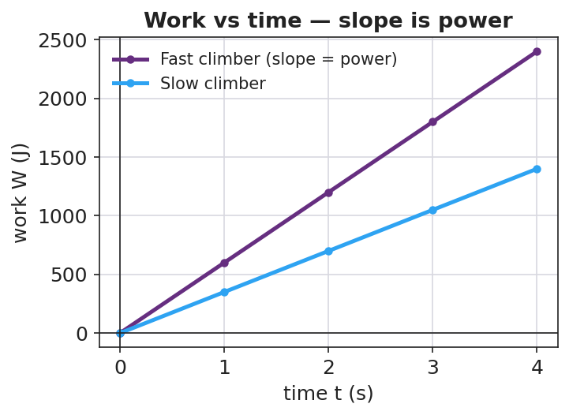

Unit: Work, Energy & Power — Lesson 02: Power
Phenomenon
Two students climb the same staircase. One climbs fast, one climbs slowly. Both reach the top, so both did about the same work against gravity — but everyone agrees something is different.

Driving Question
If two people do the same work, what makes one of them "more powerful," and how do we measure it?
Notice & Wonder
Watch the two climbers. Write what you notice and what you wonder.
Initial Model
Write, in words, a formula for "how fast work is done." What would you divide by what? Predict whether a heavier climber or a faster climber has more of it.
Investigate
The work done is fixed at 2400 J (the same staircase climb). Slide the time it takes. Watch the power bar: doing the same work in less time means more power. P = W / t.
Work W = 2400 J (fixed) · Power P = W / t = 2400 W
Make It Make Sense
- Two motors raise the same load the same height. Motor A takes 2.0 s; motor B takes 8.0 s. Which motor is more powerful, and by what factor? Explain.
- A 60 W light bulb runs for 10 seconds. How much energy does it use? (Hint: rearrange P = W/t.)
- Your friend says, "The faster climber did more work." Correct your friend using the words work, time, and power.
Stuck? Sentence frame
"Both did ___ J of work, but doing it in ___ time means ___ power, because P = W/t."
Key Vocabulary (max 3)
- power — the rate at which work is done (energy transferred per unit time); P = W/t = Fv
- watt — the SI unit of power; one watt equals one joule per second (1 W = 1 J/s)
- energy — the capacity to do work, measured in joules; power tells how fast energy is transferred
Revise Your Model
Plot work vs. time for a fast climber and a slow climber. What does the slope of each line represent? Rewrite your explanation of "more powerful" in one sentence using power and time.

Return to the Phenomenon
In one sentence, explain why the fast stair-climber is "more powerful" than the slow one even though they did the same work. Use the words power and time.
Exit Ticket + Closing Reflection
- An elevator does 48,000 J of work lifting a load.
(a) If it takes 8.0 s, what is its power output? Show P = W/t.
(b) A second elevator does the same 48,000 J in 16 s. How does its power compare?
(c) A 700 N student runs up a 4.0 m staircase in 5.0 s. What is the student's power output? - Reflection: What is one thing that surprised you today? Who helped you make sense of something?